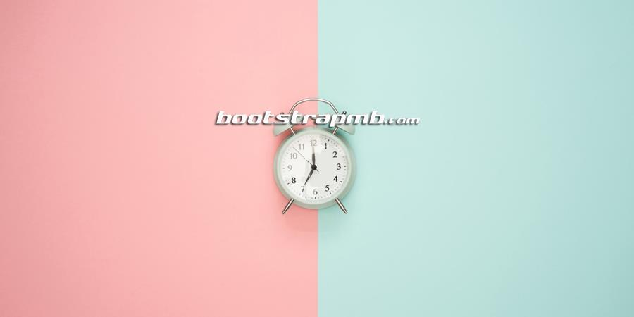
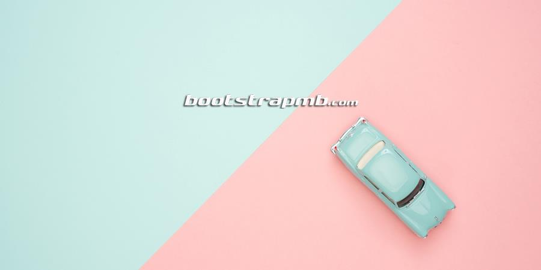

Slides only
carousel is a powerful tool for image slides. we need to add class="carousel slide" to div element and add .carousel-item to inside slide.


With controls
To get previous and next control add data-slide="prev" and data-slide="next".
Copyright © 2018 konnectcode. All rights reserved.